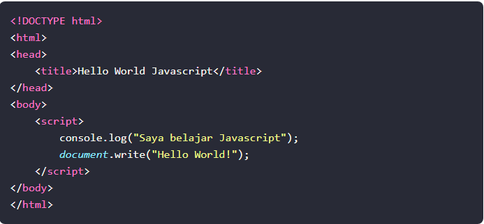
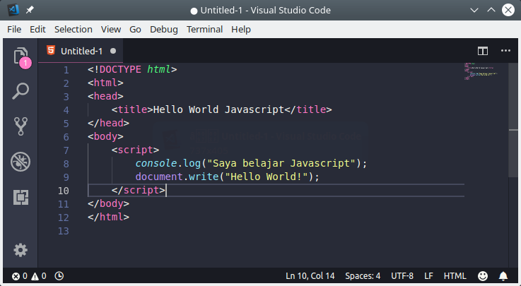
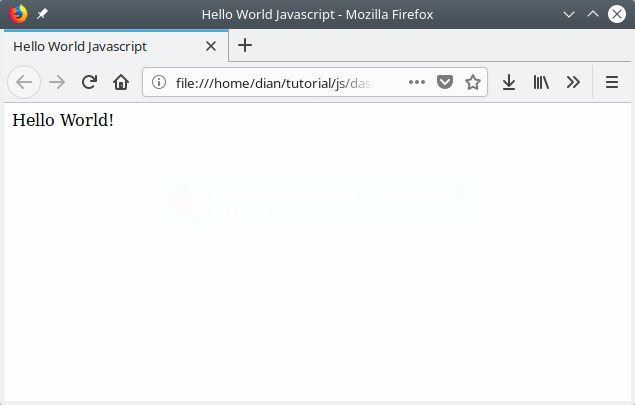

Pemrograman Javascript: Langkah Awal Belajar Javascript
Javascript adalah bahasa pemrograman yang wajib kamu pelajari jika ingin mendalami dunia web development. Saat ini javascript tidak hanya digunakan di sisi client (browser) saja. Javascript juga digunakan pada server, console, program desktop, mobile, IoT, game, dan lain-lain. Hal ini membuat javascript semakin populer dan menjadi bahasa yang paling banyak digunakan di Github.
Apa itu javascript?
Javascript adalah bahasa pemrograman yang awalnya dirancang untuk
berjalan di atas browser. Namun, seiring perkembangan zaman,
javascript tidak hanya berjalan di atas browser saja. Javascript
juga dapat digunakan pada sisi Server, Game, IoT, Desktop, dsb.
Javascript awalnya bernama Mocha, lalu berubah menjadi LiveScript
saat browser Netscape Navigator 2.0 rilis versi beta (September
1995). Namun, setelah itu dinamai ulang menjadi Javascript. 1
Terinspirasi dari kesuksesan Javascript, Microsoft mengadopsi
teknologi serupa. Microsoft membuat ‘Javascript’ versi mereka
sendiri bernama JScript. Lalu di tanam pada Internet Explorer 3.0.
Hal ini mengakibatkan ‘perang browser’, karena JScript milik
Microsoft berbeda dengan Javascript racikan Netscape. Akhirnya
pada tahun 1996, Netscape mengirimkan standarisasi ECMA-262 ke
Ecma International. Sehingga lahirlah standarisasi kode Javascript
bernama ECMAScript atau ES. Saat ini ECMAScript sudah mencapai
versi 8 (ES8). 2
Membuat Program Javascript Pertama
Sudah paham cara membuka dan menggunakan console javascript? Bagus… Kalau begitu, mari kita buat program pertama dengan Javascript. Silakan buka teks editor, kemudian buat file baru bernama hello_world.html dan isi dengan kode berikut:

Jika kamu menggunakan teks editor VS Code, maka akan terlihat seperti ini:

Silakan disimpan dengan nama hello_world.html, kemudian buka file tersebut dengan web browser. Maka hasilnya:
